Ljubljana Hi-Fi Show 2006 reportage:
(from 8/10/06 email)
Dear audio friends,
also this year I'm writing you a short report of the Lubiana Hi-Fi Show. Hope that you will enjoy it and even more the attached pictures.
|
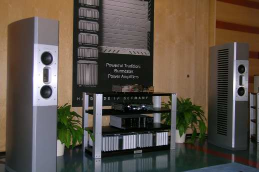 Burmester top system with the 101 sp. |
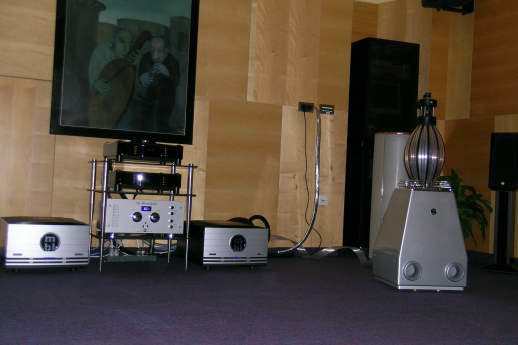 The MBL top system. |
A part from the top-systems from Burmester and MBL, which I simply don't consider (in any case the Burmester was to me more "natural" than the MBL), the best sound of the Show was probably that managed by NEL Audio.
|
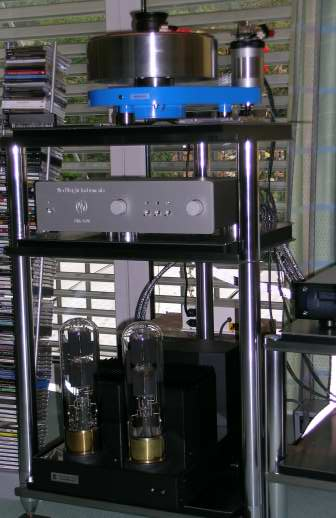 Smolic-1 turntable, ModWright tube pre and Kronzilla super-tube power amp. |
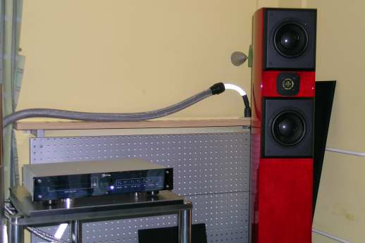 Burmester CD-player and Acoustic Zen “Adagio” sp.. |
The detailed system was:
Transfiguration Temper, vintage Technics tonearm (EPC500?), Smolic turntable 1, Burmester CD, Whest phono (2 boxes), ModWright line, Kronzilla "huge-triode" amp, Acustic Zen loudspeaker and cables (plus PS "Noise Harvester" power line noise converter: do you already know it?). Really a detailed and realistic sound!
It seems that Slovenia is a turntable land: look the nice pictures of the Smolic 2 turntable with Smolic wood tonearm and Benz LP! Kuzma was showing his Stabi SD with two tonearmas (one Reference) and his new Zanden phono pre: probably the best single component of the Show. The loudspeakes were the interesting "small" Nola.
|
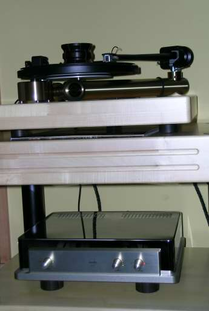 Kuzma Stabi S with the tube ZANDEN phono pre! |
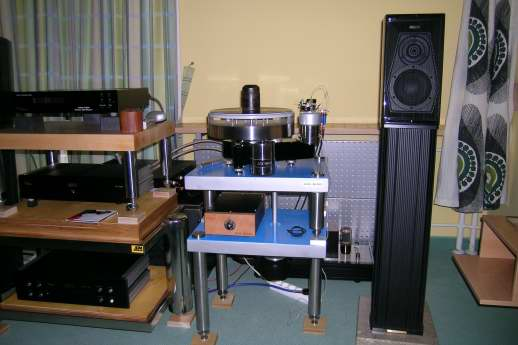 Smolic-2 turntable, NAT electronics and S.F. Guarnieri Homage sp. |
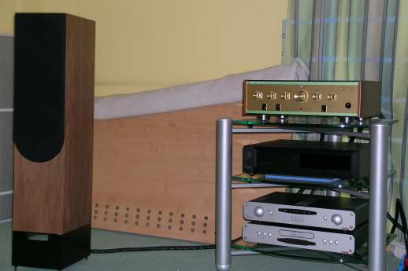 Wadia CD, Leben ampli and Living Voice “Avatar” sp. |
|---|---|---|
|
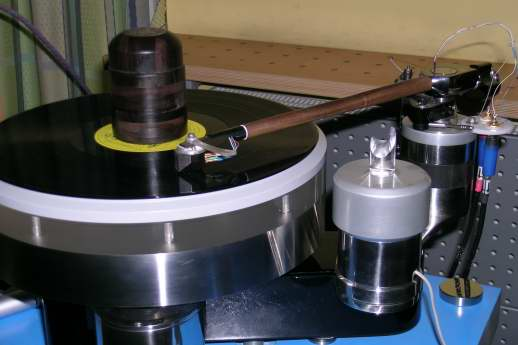 Smolic-2 turntable and tonearm with Benz LP cartridge |
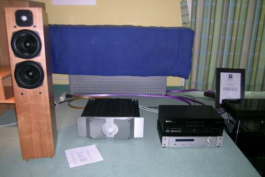 Stylos D/A, Pass ampli and Avalon “cheap” sp. |
The slovenian Stylos D/A converter room was not playing very well and that was a mystery looking to the other components (Pass, Avalon, Nordost). Also the result from Canyon Audio was not as good as the sum of the components (Wadia, Leben, Living Voice and Oyaide cables) would suggest, but probably there was a burn-in problem.
Finally there was the "interesting" sounds from Pearl Audio (with Nottingham, Plinius, Bedini and Melody) and also from the small bookshelf BlackMaster (www.audioplus.hr, with the woofer inside the box in front of the port).
|
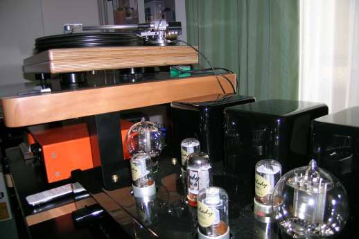 Nottingham turntable and Melody pre |
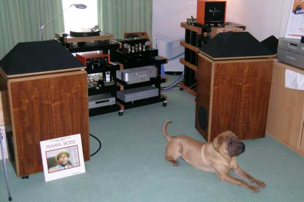 Pear audio “dog system” |
|---|
Have a nice listening!
Tino © May 2007